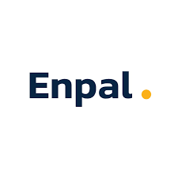
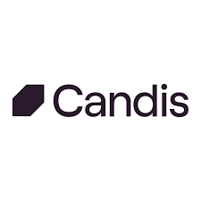

Bachelor of Science - Mathematics
Technical University of Berlin, 2018-2022


I am Fisnik, a Software Engineer with a Bachelor of Science in Mathematics from the Technical University of Berlin and 2 years of hands-on experience in Python and process automation. Throughout my career, I have successfully automated various workflows, streamlining processes and boosting efficiency within my teams. My strong problem-solving skills and passion for clean, maintainable code have enabled me to deliver robust solutions.
Currently, I am expanding my skill set by learning HTML, CSS and JavaScript, diving into new technologies to broaden my expertise. I am highly motivated to continue growing as a developer and am eager to explore and master new tools, frameworks, and programming languages. I thrive on challenges and am always looking for opportunities to innovate and improve through technology.
November 2022 - Present
April 2022 - October 2022
February 2021 - March 2022
